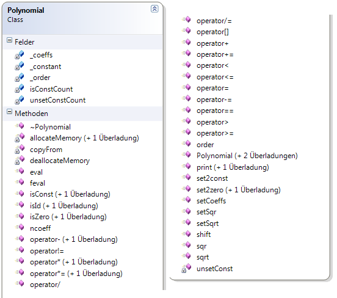
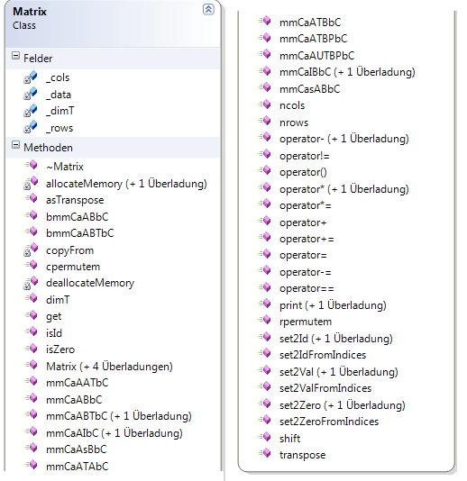

Matrizen mit Taylorpolynomen
Michael Berth Marvin Ritter
Problembeschreibung
- Händisches Rechnen mit großen Matrizen sehr aufwändig
- Existente Mathe-Bibliotheken unterstützen keine Matrizen aus Taylorpolynomen
Taylorreihe
- komplizierte Funktion durch Potenzreihe annähren
- Annährung ist gut im festgelegten Punkt
- Ausrechnen des Polynoms leichter und schneller
Taylorreihe
\[ \begin{aligned} T_n(a) = f(a) + \frac{f'(a)}{1!} (x-a) + ... + \frac{f^{(n)}(a)}{n!} (x-a)^n \end{aligned} \] \[ \begin{aligned} \lim\limits_{x \rightarrow a}{ \frac{f(x) - T_n(x)}{(x-a)^n} } = 0 \end{aligned} \]
Taylorreihe
\[ \begin{aligned} f(x) &= \sqrt{x} = x^\frac{1}{2} \quad \quad \quad a = 4 \\ T_1(4) &= 2 + \frac{1}{4} \frac{(x - 4)}{1!} \\ T_2(4) &= 2 + \frac{1}{4} \frac{(x - 4)}{1!} - \frac{1}{32} \frac{(x-4)^2}{2!} \\ T_3(4) &= 2 + \frac{1}{4} \frac{(x - 4)}{1!} - \frac{1}{32} \frac{(x-4)^2}{2!} + \frac{3}{256} \frac{(x-4)^3}{3!} \\ \end{aligned} \]
Taylorreihe
Aufgabenstellung
- Erstellung einer C++ Blibliothek (DLL)
- Funktionalitäten
- Portierung in andere Sprachen
Funktionalitäten
- Wichtigsten Rechenoperationen von Taylorpolynomen (addieren, multiplizieren, quadrieren, ableiten etc.)
- Wichtige Funktionen für Matrizen (Matrizenaddition, -multiplikation, Matrizen transponieren, etc.)
- Optimierte Matrizenmultiplikationen
- Hilfsfunktionen
Vorgehensweise
- Analyse des vorhandenen Quellcodes
- Erstellung eines DLL-Projektes
- Implementation von GTest
- Schreiben von Unittests
- Implementation der Funktionalität
- Erstellung eines Projektes zum Test der DLL
Test Driven Development
Test Driven Development
- Test schreiben
- kompilieren -> Test rot
- Funktionalität implementieren
- kompilieren -> Test sollt grün sein
Google C++ Testing Framework
- Einfaches Testen von C++ Code
- Plattformunabhängig
- built-in Assertions
GTest Assertions
- ASSERT_EQ(condition, value)
- ASSERT_NE(condition, value)
- ASSERT_THROW(function, exception)
- ASSERT_NO_THROW(function, exception)
- ASSERT_TRUE(value)
- ASSERT_FALSE(value)
Test passed
Test failed
Example Testcase

Klassendiagramm
Klassendiagramm Polynomial
Klassendiagramm Matrix
Optimierungen
- Matrizenmultiplikationen sehr aufwendig => \( \Omega(n^3) \)
- für spezielle Formen aus Matrizen lassen sich viele Rechenoperationen einsparen
\[ \begin{aligned} C' &= \alpha A B + \beta C \\ C' &= \alpha \begin{pmatrix} a_{00} & \dots & a_{0n} \\ \vdots & \ddots & \vdots \\ a_{r0} & \dots & a_{rn} \\ 0 & \dots & 0 \\ \vdots & \ddots & \vdots \\ 0 & \dots & 0 \end{pmatrix} \begin{pmatrix} b_{00} & \dots & b_{0n} \\ \vdots & \ddots & \vdots \\ b_{m0} & \dots & b_{mn} \end{pmatrix} + \beta C \end{aligned} \]
Portierungen
- von jedem ein Port in eine andere Sprache
- Marvin -> Port in Python
- Micha -> Port in C#
Beispielanwendung
?